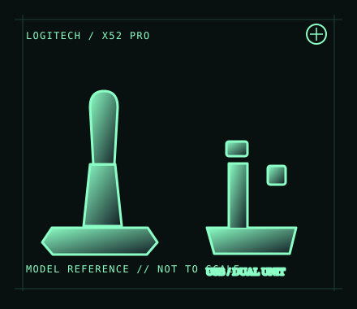

[ JOYSTICK CONTROLLERS // IDENTIFIED COMPONENT ]
Logitech G X52 Professional H.O.T.A.S.
PC flight-control set pairing an illuminated stick and throttle with an LCD display and programmable controls.

MODEL IDENTIFICATION: Logitech G X52 Professional H.O.T.A.S.; regional retail SKU 945-000025. Confirm the label and revision on the actual set. Published family specifications may not establish the revision or condition of an individual unit; compare its label and included parts with the linked documentation.
Model specifications
| Catalog subcategory | Joystick controllers |
|---|---|
| Exact model / identifier | Logitech G X52 Professional H.O.T.A.S.; regional retail SKU 945-000025. Confirm the label and revision on the actual set. |
| Design and controls | Separate stick and throttle assemblies with twist rudder, throttle axis, multiple hats/buttons and an illuminated throttle LCD. The Pro variant adds its own finish/display details; do not substitute base-X52 manuals or part numbers without checking. |
| Physical interface | The throttle is the USB host connection; the stick connects to the throttle through the set’s inter-unit cable. It is a PC joystick/HOTAS, not an Xbox or PlayStation controller. |
| Host compatibility | Designed for Windows PC flight simulators. Logitech’s historical software/support coverage is OS-version specific; macOS, Linux and consoles are not listed as supported hosts. Games must expose configurable joystick inputs for full use. |
| Driver and configuration | Use Logitech’s current X52 Professional support/download page for available software and documentation. Legacy programming software and game profiles may not be maintained for every current Windows build; test basic enumeration and axes before installing profiles. |
Setup and control mapping
Map stick pitch/roll, twist rudder and throttle separately. Check the LCD/time display and lighting as separate functions; they may require vendor software or title integration beyond ordinary joystick input. Record profile version and simulator bindings.
Before use, connect the device directly to the stated host, confirm it appears once in the operating system’s controller list, and test every axis and button. Keep host calibration separate from in-game dead-zone and sensitivity settings so later maintenance can reproduce the baseline.
Preservation and service notes
Keep the inter-unit cable and USB lead free of tension, inspect the centering mechanism and throttle friction, and document LCD/button illumination separately from input function. Preserve original cables and any power/accessory parts with the matched set.
Revision caveat: Do not confuse X52 Professional with the standard X52: case, display, identifiers and bundled software can differ. Host support is PC-oriented and older programming utilities should be treated as version-sensitive.
For a physical archive entry, record the as-found label, serial/part number where present, accessories, host OS, driver or firmware version, and test method. Separate observed condition from published specifications.
References and support
- X52 Professional Space/Flight H.O.T.A.S. — Logitech GManufacturer product page for the Professional X52 configuration.
- X52 Professional technical specifications — Logitech SupportModel-specific support record; check its OS and product-version notes.
- X52 Professional user guide — LogitechManufacturer user guide covering setup and control use.
Vendor pages and downloads can be revised or retired. Preserve the applicable manual locally and note its revision; use the exact product label when choosing firmware or drivers.